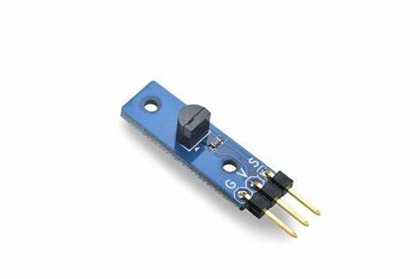
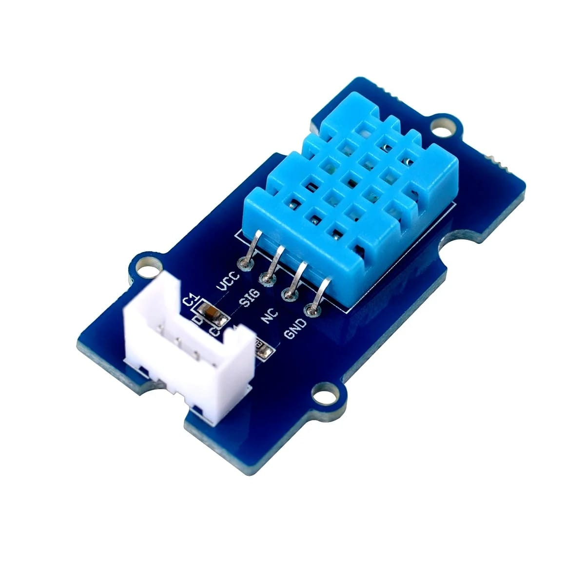

Sensor Data
Temperature: --°C
Humidity: --%
Soil Moisture: --
Sensor Images
 
Actuators
Data Analytics
Current Stats related to Modern Agriculture:
- The global smart agriculture market size was valued at USD 7.53 billion in 2020 and is expected to grow at a compound annual growth rate (CAGR) of 9.8% from 2021 to 2028.
- The use of drones in agriculture has increased significantly in recent years. Drones can be used for crop monitoring, mapping, and spraying. They can also be used to collect data on soil moisture and nutrient levels.
- The use of artificial intelligence (AI) in agriculture is also increasing. AI can be used for crop monitoring, yield prediction, and disease detection.
- The Internet of Things (IoT) is also being used in agriculture. IoT sensors can be used to monitor soil moisture, temperature, and other environmental factors.